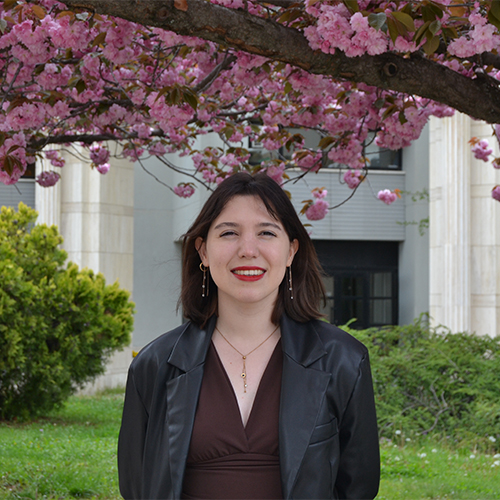

Education
Bilkent University
- September 2021 - June 2025
- Ankara, Turkey
- Faculty of Science
- Department of Molecular Biology and Genetics
- BSc in Molecular Biology and Genetics, graduated with Honors for a GPA of 3.20/4.00
- Merit scholarship student for being in the top 1% of the National University Exam (YKS) entrants, awarded by TUBITAK (The Scientific and Technological Research Council of Türkiye)
- Earned High Honor status in Fall 2023 and Spring 2024, and Honor status in Spring 2023 and Fall 2024 for high semester GPA
- Relevant Coursework: Genetics, Immunology, Microbiology, Physiology, Genetics and Biology of Cancer, Molecular Biology of the Cell I & II, Molecular Biology of the Gene, Developmental Biology, Molecular Genetics, Experimental Approaches in Molecular and Cellular Biology, Introduction to Bioinformatics, Introduction to Cellular and Molecular Biology of the Brain, Biochemistry I & II, Introduction to Programming in Python, Statistical Methodology, Science and Ethics, Professional Communication
- Select Works:
- MBG 491 Senior Project & MBG 391 Summer Practice II: Did research internships at a laboratory in Bilkent University between January and May 2024 and at the Max Planck Institute of Molecular Physiology between July and September 2024 in place of thesis, detailed under the Experience heading
- MBG 489 Genetics and Biology of Cancer: Presentation on the reversible and adaptive resistance to BRAF(V600E) inhibition in melanoma
- MBG 483 Developmental Biology: Group presentation on “An ancient defense system eliminates unfit cells from developing tissues during cell competition”
- MBG 466 Introduction to Cellular and Molecular Biology of the Brain: Presentation on the distinct subtypes of proprioceptive dorsal root ganglion neurons that regulate adaptive proprioception in mice
- MBG 416 Science and Ethics: 6-person project on “Human Experimentation & Ethical Concerns”
- HIST 200 History of Turkey: Researched and authored a paper with a 5-person group on the history of Ankara University's Sumerology Department, highlighting Irfan Albayrak's contributions, the influence of refugee lecturers, early graduates, and linguistic analyses comparing Sumerian with Turkish, Assyrian, and Akkadian
- PHS 102 General Physics II: “The Effect of Coil Turn and Current on the Electromagnetic Strength”
- PHS 101 General Physics I: “Gravitational Acceleration (g) on Free-Falling Objects”
Bahcesehir Atakum Science and Technology High School
- September 2017 - July 2021
- Samsun, Turkey
- Graduated with a GPA of 99.34/100 from the Science-Math Concentration
Experience
Hacettepe University: Esendagli Laboratory
Intern
- September 2025 - Ongoing
- Ankara, Turkey
- Assist in experimental design, data collection, protocol optimization in molecular biology and cellular assays, processing, and analysis of biological samples
- Learn and refine experimental techniques such as flow Cytometry and cell sorting, enzyme-linked immunosorbent assay (ELISA), fluorescence microscopy, qRT and RT polymerase chain reaction (PCR), western blotting, cell viability and death assays, molecular cloning, and in vivo imaging technology
Max Planck Institute of Molecular Physiology
Intern
- July - September 2024
- Dortmund, Germany
- Worked with the Peng Wu Group, led by Dr Peng Wu, to research protein-RNA interactions and post-transcriptional modulations
- Tested the effectiveness of PROTAC class drugs, designed and produced in the laboratory for the treatment of acute myeloid leukemia (AML), by applying them at different concentrations on the Mono-Mac-6 cell line using the western blotting and electrophoretic mobility shift assay (EMSA) methods
- Travelled to Germany via Erasmus+ and TUBITAK-2224D scholarships
Bilkent University
Intern
- January - May 2024
- Ankara, Turkey
- Assisted with literature review and experiment design to test samples taken from patients with amyotrophic lateral sclerosis (ALS) caused by hexanucleotide repeat expansion in intron 1 with polymerase chain reaction (PCR) primers designed at our laboratory as my senior project at Bilkent University
- Learned about and refined techniques in DNA isolation and purification, isolation of peripheral blood mononuclear cells (PBMC) from blood, PCR, gel electrophoresis, and primer design and applied these methods to cloning of TPCN1 gene and other ongoing projects and collaborations
Bilkent University UNAM (National Nanotechnology Research Center)
Intern
- April - September 2023
- Ankara, Turkey
- Assisted with experiments of an already ongoing project concerning Glioblastoma Cells Senescence Induction using methods like western blotting and siRNA transfection at the Arslan-Ergul Lab
- Gained experience in writing project and funding proposals for scientific experiments
Private Viromed Laboratories
Intern
- August 2021
- Ankara, Turkey
- Categorized blood and swab samples coming for screening for viral diseases, prepared samples for screening for experiments, and learned about the techniques of PCR and DNA isolation
Academic Enrichment
HarvardX: Statistical Inference and Modeling for High-throughput Experiments
- September 2025 - Ongoing
- Gain expertise in advanced statistical methods, including error rate control, false discovery rates, parametric distributions, maximum likelihood estimation, hierarchical models, and empirical Bayes, with applications in high-throughput biological data analysis and applied concepts through R programming, integrating statistical modeling with practical case studies in next-generation sequencing and microarray data
MITx: Making a Cell Therapy: Principles and Practice of Manufacturing
- September 2025 - Ongoing
- Study an overview of how cell therapies can be manufactured by following lectures on the topics of basic cellular biology, genetic modifications, cell isolation & lab-growth in relevant doses, the analytical methods to ensure these procedures are done safely, how the characteristics of cell therapies can drive manufacturing and supply chain decisions, and how pharmaceutical industry regulations affect these practices
The Immuno-Oncology for the Translational Research Short Course (ITRSC)
- June 2025 - Ongoing
- Follow the recordings of a previous course offered by a multidisciplinary team of Memorial Sloan Kettering Cancer Center (MSK) faculty members covering topics such as checkpoint blockade, novel immunomodulatory antibodies, cellular therapy, immune-monitoring, clinical trial design and development, and how clinical trials can be integrated with traditional cancer therapy
Extracurricular Activities
Organizer for the Bilkent Genetics Society
- 2022 - 2023
- Handled communications between event guests, speakers, and attendees, and planned event schedules
- Organized the online 13th Annual Horizons in Molecular Biology and Genetics Symposium in May 2023 and coordinated with Bilkent Psychology Society to organize the 10th Annual Neuroscience Days in December 2022
Skills
Lab Skills
- Flow Cytometry
- Western Blotting
- Cell culture maintenance
- PCR
- PBMC Isolation from Blood
- Agarose Gel Electrophoresis
- Primer Design
- EMSA
- Cloning and Isolating DNA
- Site Directed Mutagenesis
- RNA Isolation
- siRNA knockdown
Technical
- FlowJo
- Python (Intermediate)
- R (Intermediate)
Language
- Turkish (Native)
- English (Advanced, TOEFL 118/120, October 2024)
- German (B1)
Interests
- Traditional media painting (acrylic, oil, and water)